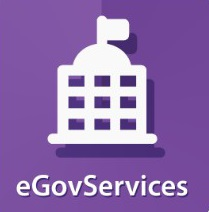
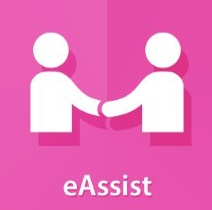
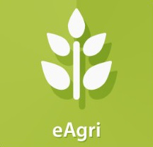

CITY PUBLIC LIBRARY
CITY PUBLIC LIBRARYTECH4ED
The TECHNOLOGY EMPOWERMENT FOR EDUCATION,EMPLOYMENT, Entrepreneurs, And Economic Development (Tech4ED) project Evolved From the philippine Communities ecter Program, A National Digital Inclsion Initative Establishing eCeters That Provide Critical e-Goverment And ICT-enabled Services in Communities With Minimal Or No Acess To Information And Government Service.This Initiative Was The Government's Response To the World Summit On Information Society Plan Of Action Of Which The Philippines Was A Signatory Which States That " Goverment And Othe STakeholders Should Establish Multi-Purpose Community Public Access Points, Providing Affordable Or Free-Of-Charge Acess For Their Ctizens To the Various communitication Resources, Notably The Internet."
What Is A Tech4ed Center?
A Tech4ED Center is a selft-sustaining, shared facility providing access to ICT-enabled services and relevant content. It serves as a conduit for efficient delivery of government and the other services and a potent tool for the empowerment and participation of the unserved and underserved communities in development.
Mission
To establish sustainable Tech4ED Centers nationwide as a delivery channel for relevant ICT-enabled services and content for socio-economic development of unserved and underserved communities towards improved quality of life.
Objectives
eGOVSERV provides links to online government services and application form such as:

eASSIST aims to empower special sectors through access to neccessary skills training content in answer to specific Industry needs.
ICT for Digital Literacy
Upgrade digital compentecies for employment or entreprenuerial opportunities.
ICT for Financial Literacy
Learn how to save, spend and invest money.
ICT for Career Development
Develop the competencies relevant to a particular industry for higher grade jobs.
ICT for Entrepreneurs
Learn how to start a business and utilize ICT to expand market reach.
eEDUSKILLS delivers e-Learning on demand to address the educational divide.
Alternative Learning System (ALS)
Delivers interactive lessons to help out-of-school youth and adults in attaining a high school diploma
Learning English Application for Pinoys (LEAP)
Improves English communication skills in preparation for IT-BPM industry.
Skill Training
To acquire skills and competencies to start a small business or get employment.
Values and Character Formation
Enable people to uphold Traditional Values and how to behave as a "Netizen."
RotarE-Library
Online library to access various books.
eAGRI provides contents and services on agriculture technologies for farmers and fisher folks.
eFarming
Online farm and business adviser.
PhilRice MOET App
Mobile app that helps farmers compute the fertilizer requirments and predict rice yield.
Pinoy Rice/Rice Knowledge Bank/ Rice Data And Information Portal
Provides data on rice production techniques, agricultural technologies, and best farming practices.
Rice Crop Manager
Management guideline for lowhand rice crop.
Rice Doctor
Diagnostic and management tool for rice crop.
Rice Text Center
SMS-based helpdesk and customet support for Filipino farmers.
eMarketPlace provides greater market reach beyond the entreprenuers' community for exponential economic growth and opportunities.
OneStore
An online shop for local products from DOST-assisted micro, small, and medium enterprises